RADIO INFORMS AND ENTERTAINS YOU
The illusion of realism
Radio 1895
"This is A.F.V.N. - AM and FM in Saigon, the key station of the American Forces Vietnam network.
This is a division of the Office of Information, Military Assistance Command Vietnam -
A.F.V.N. operating on five hundred and forty kilowatts on A.M. band with an authorised power of fifty thousand watts.
Looks wearing a white flag -
(burst of fire) - him
Studio and transmitter are located in Saigon and Carnlo, Republic of Vietnam -
authorided by the U.S. Department of Defense and the Government of Vietnam -
A.F.V.N A M and FM Saigon provided information and entertainment 24 hours of the day to American personnel in the Republic of Vietnam -
and now another broadcasting day begins with the national anthem of the Republic of Vietnam and of the United States of America.”
(American National Anthem)
The War of the Worlds


WESTERN IN VIETNAM


 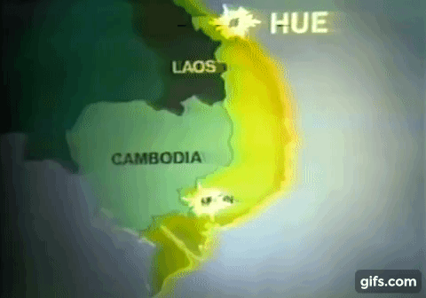
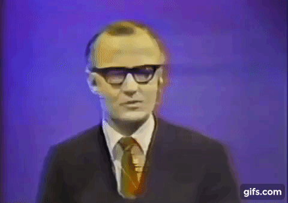
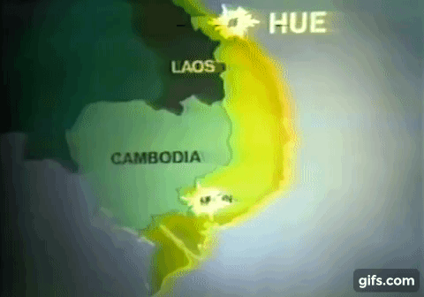
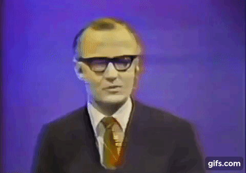


 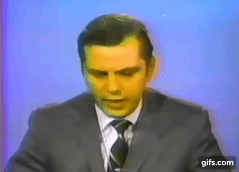
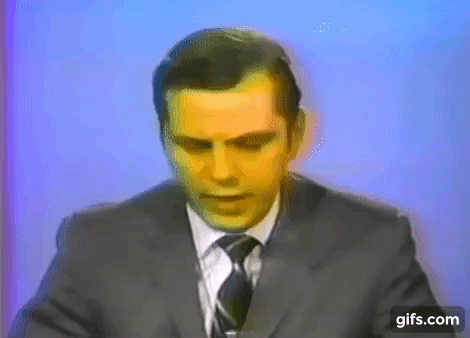

NBC News special on Vietnam
January 31, 1968
Television 1927
The documentation of life and death
The following program is brought to you in living color on NBC.
NBC News correspondent Frank McGee
For a late film report on Vietnam country wide, here is NBC News correspondent Jack Perkins in Tokyo by satelite.
We have told reports tonight from NBC News correspondent howard tucknur, Ron Nessen and Wilson Hall.
Howard tucknur covered the battle at the Embassy in Saigon.
Around the Saigon Airport, Wilson Hall was there.
NBC News correspondent Robert kirovsky, Washington.
NBC White House correspondent Ray Sharer, Washington.
This has been a presentation of NBC News which is solely responsible for its content.
PRAYERS FOR PEACE
Words at War
Television 1927
Lyndon B. Johnson
October 31, 1968
Speech about the Vietnam War “Peace in the world”
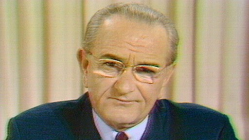 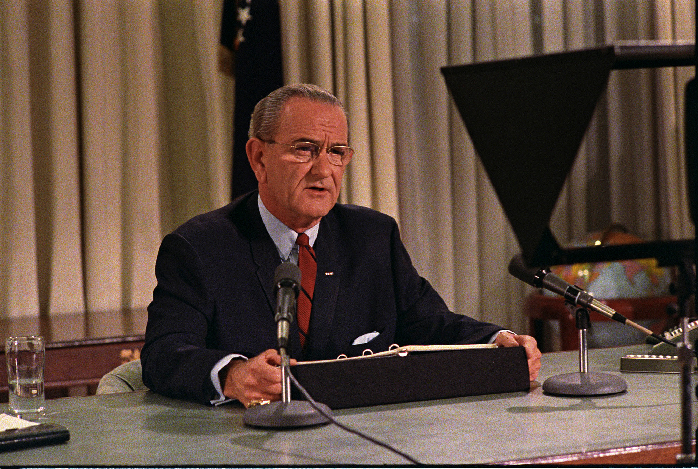Richard Nixon
November 3, 1969
Speech on Vietnam War policy “Silent Majority”
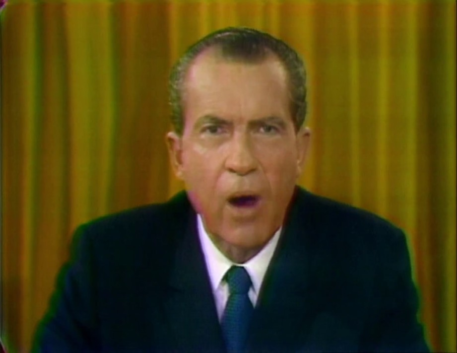 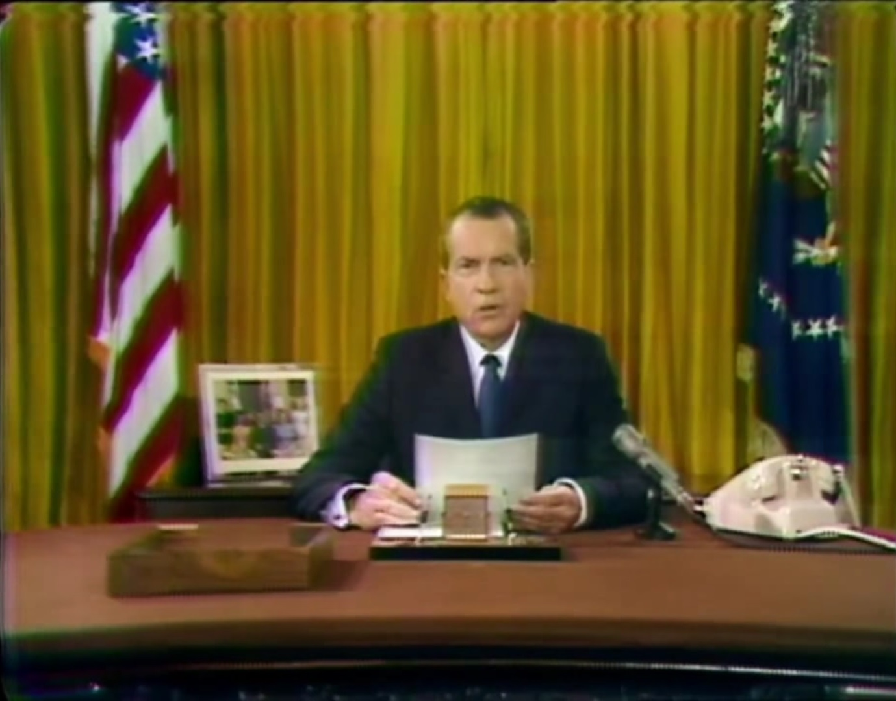Ronald Reagan
June 12, 1987
Speech "Tear down this wall"
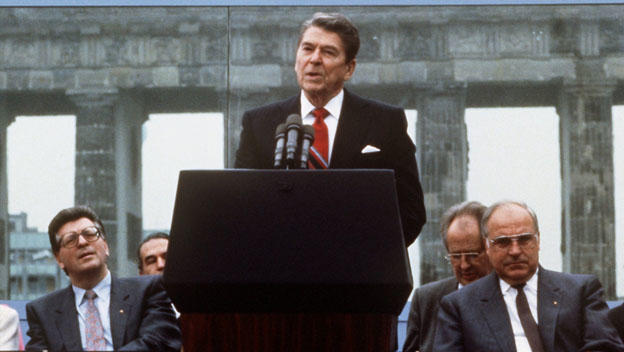 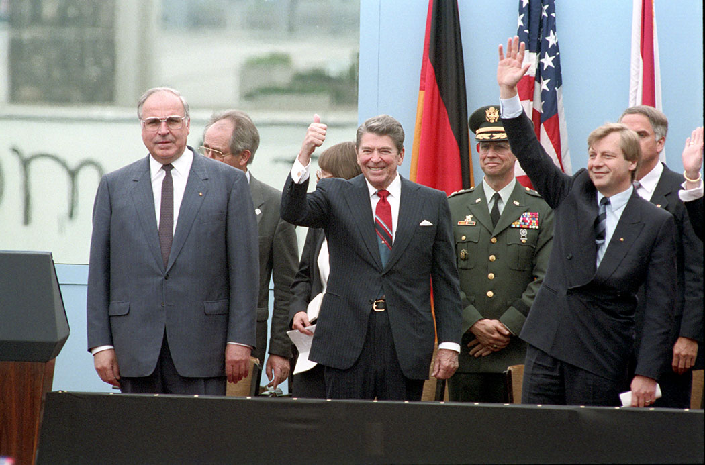George W. Bush
January 29, 2002
Speech “Axis of evil”
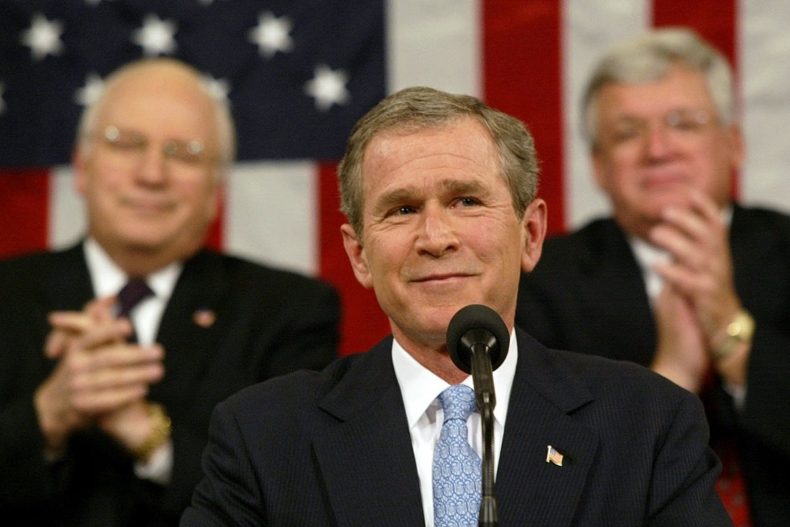George W. Bush
May 1, 2003
Speech “Mission Accomplished”
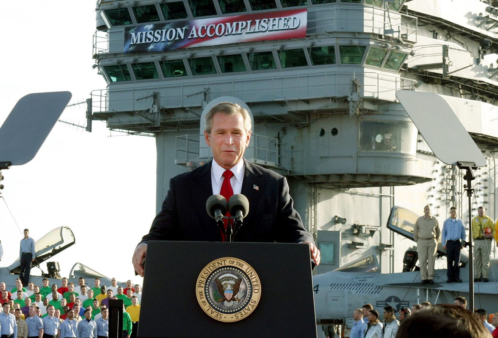 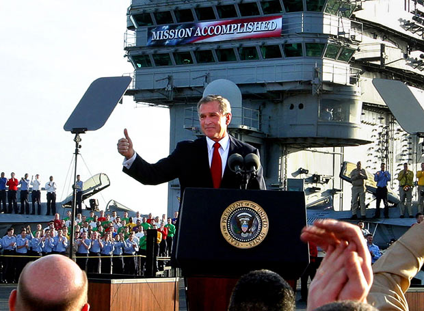Barack Obama
August 31, 2011
Speech were he declares end to US combat mission in Iraq
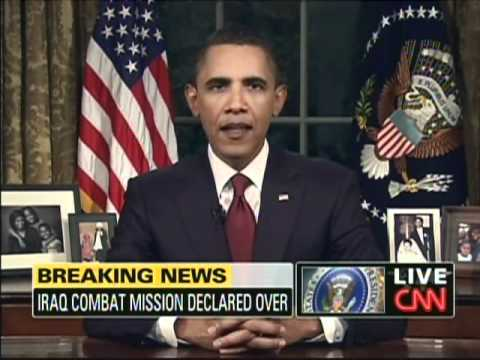Barack Obama
2011
Speech “Iraq War is over”
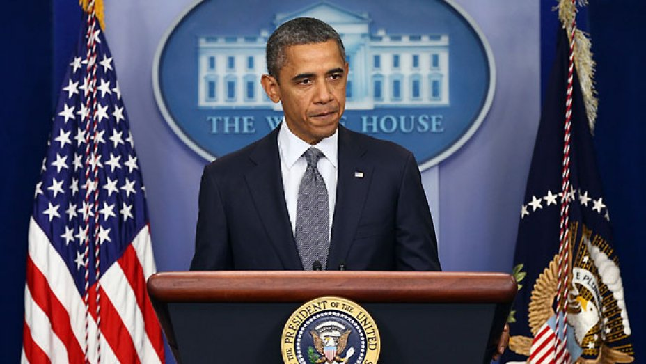Barack Obama
September 10, 2014
Speech were he revealed the plan from the United States and its allies to combat the Islamic State in Iraq and Syria
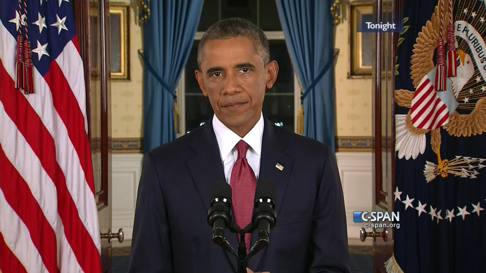 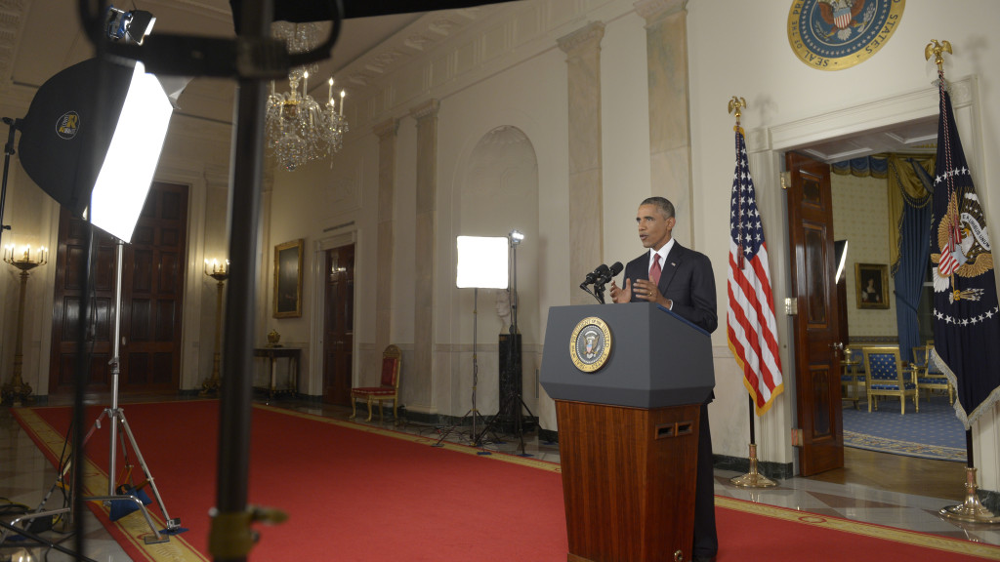Donald Trump
January 8, 2020
Speech where he speaks about the Iranian missile attacks in Iraq at the White House
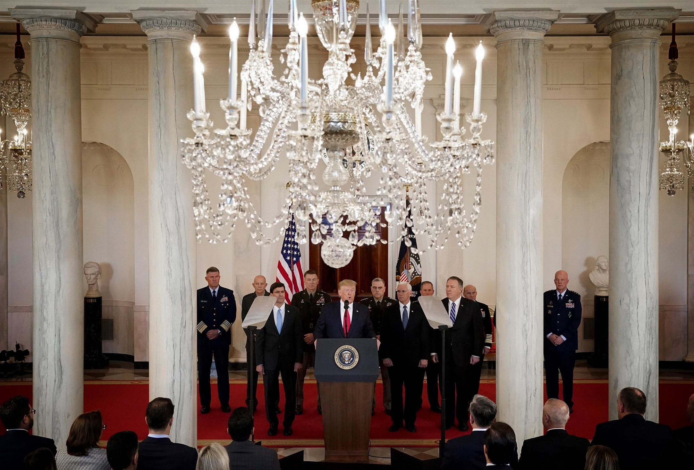THE ABSTRACT UNIVERSE OF WAR
What's important to users about news on the Net
Internet 1990
Source: Pew Internet & American Life Project Iraq war survey,
March 20-25, 2003.
Get news from a variety of sources
66%
Get up-to-the-minute news
63%
Get points of view different from those in traditional news
52%
Get points Of view different from official government sources
52%
Exchange emails/instant messages about the war
31%
THE COST OF THE WAR

Deathly places
Satelitte 1902 - Google maps 2005
WED NOV 05 2008 --
US Air Strike in Afghanistan
Kills 23 Taliiban, 7 Civilians
THE BARS, MONEY OR THE FORGETTING OF WAR
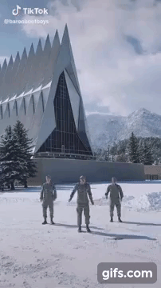US troops are still posting to TikTok despite partial ban over Chinese spy concerns
Satelitte 1902 - Google maps 2005